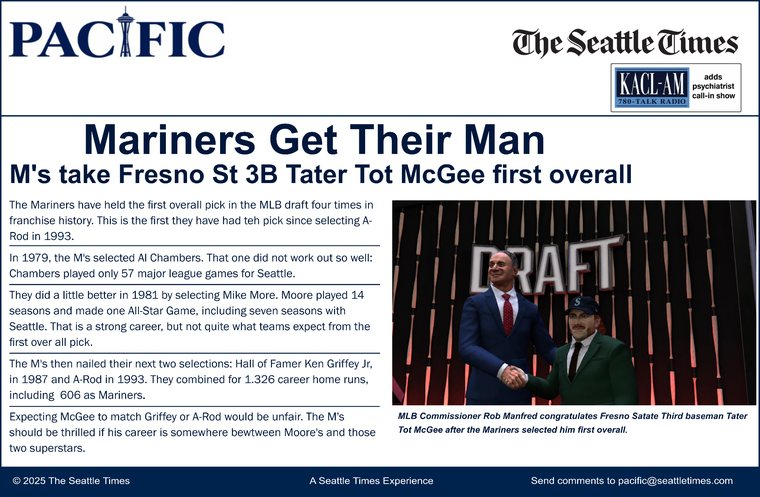
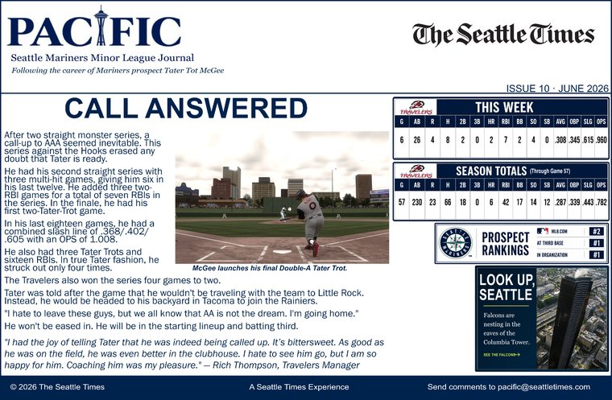
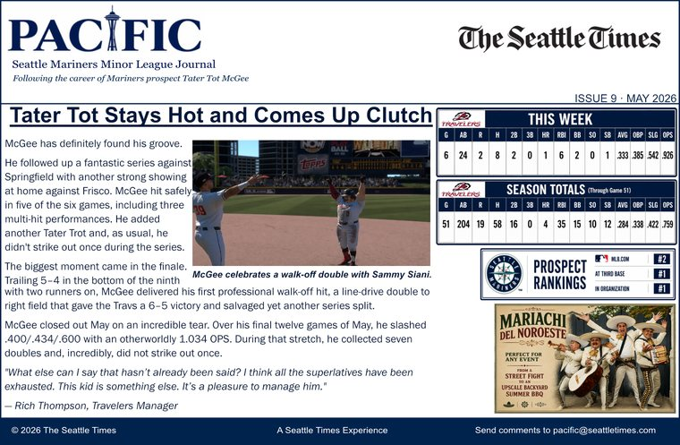
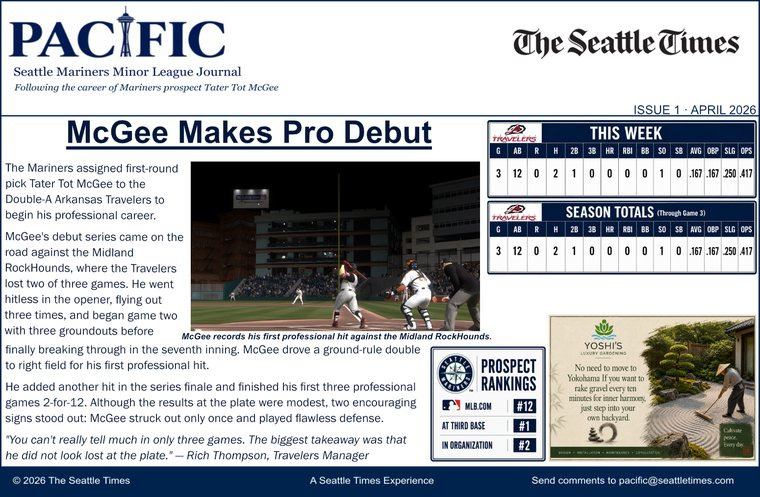

TATER TOT CHRONICLES
A family and baseball archive

Once you hear the name “Tater Tot” McGee, you expect a silly nickname. Then you discover a story rooted in the Irish Potato Famine, the McGee farm in Idaho and more than 160 years of baseball history.
The complete feature is readable directly on the website. No PDF viewer required.
Enter the McGee story →“Two things are hardwired in the McGee DNA: growing taters and hitting taters.”— Tater Tot McGee
Tater's high school career culminates in an Idaho 5A state championship. The next chapters take him to Fresno State, Omaha and eventually the top of the MLB Draft.
See the career timeline
McGee finishes his college career by leading the Bulldogs to a national title.

Seattle selects McGee first overall and brings the family story to the Pacific Northwest.

After a monster stretch and a final series against the Hooks, the call arrives: Tacoma. McGee leaves Arkansas with the next stop on the road to Seattle waiting.
Read Issue 10
The first professional walk-off hit closes a scorching May.

The professional PACIFIC archive begins in Midland.
Stephen McGee built a small baseball field on the family farm in the nineteenth century. More than a century later, Tater grew up hitting on that same ground.
Read Stephen's chapter →